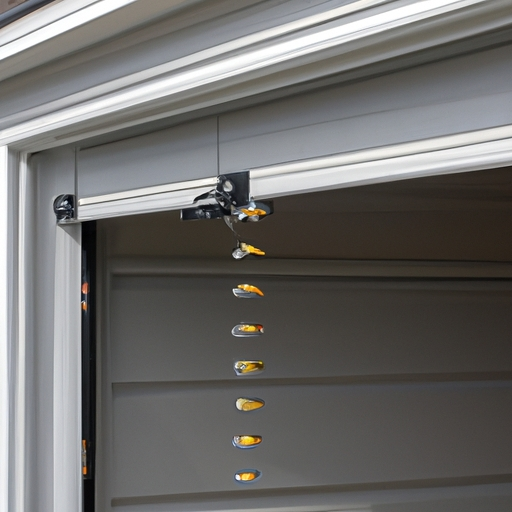

Explanation of the role of extension springs in garage doors
Extension springs play a vital function in the operation of garage doors. These springs are responsible for counterbalancing the weight of the door, allowing it to open and close smoothly (ya know). Without extension springs, garage doors would be extremely difficult to operate by hand (!).
So what exactly do these extension springs do? Well, when you press that fancy button or pull on that nifty handle, the door begins to move upwards or downwards with the help of these trusty springs. As the door moves, the extension springs stretch and store potential energy (can ya believe it?). This stored energy is then released as the door reaches its desired position, making it easier for you to manually open or close it.
Now let's talk about safety because we all know how important it is (right?). Extension springs are designed with safety features in mind. They are typically installed with safety cables that prevent them from snapping and causing harm if they break (thank goodness!). These cables act as a fail-safe measure, ensuring that even in worst-case scenarios, your garage door won't come crashing down unexpectedly.
In conclusion, extension springs have an indispensable role in garage doors. They provide balance and assist in smooth operation while also prioritizing safety (which is pretty awesome)! So next time you effortlessly open your garage door without breaking a sweat (or cursing), remember to thank those hardworking extension springs!
Signs that indicate the need for garage door spring replacement
Transition phrase: On the topic of extension springs, let's explore signs that indicate the need for garage door spring replacement.
Garage doors can be finicky creatures. They (don't) always work perfectly, and sometimes they (can) give us trouble. One key component responsible for their smooth operation is the extension springs. When these vital springs start exhibiting certain signs, it might just be time for a replacement!
Firstly, an obvious sign is when your garage door fails to open or close smoothly. You may notice it jerking or hesitating mid-action. This could indicate that the extension springs are losing their strength and no longer providing enough force to support the weight of the door. Such malfunctioning can lead to potential safety hazards if neglected.
Additionally, keep an ear out for strange noises coming from your garage door system. If you hear excessive squeaking, scraping, or grinding sounds during opening or closing, it could mean that the extension springs have worn out over time and are in dire need of replacement. Ignoring this warning sign may result in further damage to other components of your garage door system.
Another telltale sign is if you notice any visible damage on the extension springs themselves. Look out for gaps between coils, rusting, fraying cables, or even a complete breakage! These issues are clear indicators that your springs have reached their limit and must be replaced promptly before more severe problems arise.
Moreover, pay attention to how balanced your garage door feels when manually lifting it. If one side seems heavier than the other or if there's an uneven distribution of weight while raising or lowering the door manually (which should be done with caution), chances are high that you're facing spring-related issues.
To sum up(!), when encountering any combination of these signs - erratic movement, unusual noises, visible damage on extension springs(!), imbalanced weight distribution - it's crucial to prioritize garage door spring replacement as soon as possible. Neglecting these warning signs may result in a complete malfunction or even pose safety risks to you and your loved ones.
In conclusion, it's essential to stay vigilant and address any indications of extension spring failure promptly. Remember, a well-functioning garage door ensures convenience, security, and peace of mind for your daily routine(!). Don't let those springs hold you back from enjoying hassle-free access to your garage space!
Steps to replace extension springs in a garage door
When it comes to replacing extension springs in a garage door, there are several steps you need to follow. These steps ensure that the (uttermost) safety and functionality of your garage door is maintained. Now, let's dive into the process!
Firstly, make sure to disconnect the power supply to the garage door opener. It is (crucial) for your own safety! The last thing you want is for the garage door to suddenly spring open while you're working on it. So, always remember to turn off the power before starting any repair work.
Next, gather all the necessary tools and materials needed for this task. You will need a wrench, pliers, safety glasses, replacement extension springs, and some lubricant. Double-check that you have everything ready before proceeding.
Now, locate the extension springs on your garage door. They can usually be found above or beside the horizontal tracks. Once located, carefully examine them for any signs of damage or wear and tear. If they appear damaged or worn out (at all), they must be replaced immediately.
To remove the old extension springs, use a pair of pliers to pull down on them until they release from their brackets. Be cautious as these springs are under tension and could potentially cause injury if mishandled! Once removed, discard them properly.
Once you have successfully removed the old extension springs, it's time to install new ones in their place. Start by attaching one end of each spring onto its corresponding bracket using a wrench. Then stretch the other end towards its designated position on either side of the garage door tracks.
After installing both new extension springs securely, test their tension by manually opening and closing your garage door a few times. Ensure that it moves smoothly without any issues or resistance.
Finally, don't forget to lubricate all moving parts of your garage door system regularly! This helps prevent rusting and ensures smooth operation over time.
In conclusion, replacing extension springs in a garage door may seem like a daunting task, but by following these steps carefully, you can accomplish it safely and efficiently. Remember to prioritize your safety throughout the entire process and consult a professional if needed. So, go ahead, give your garage door the attention it deserves!
Safety precautions to consider when replacing garage door springs
When it comes to replacing garage door springs, safety precautions are of utmost importance. (Oh my gosh), these springs can be highly dangerous if mishandled! Therefore, it is crucial to follow proper procedures and take necessary measures to ensure personal safety.
Firstly, before attempting any work on extension springs, make sure to wear protective gear such as gloves and goggles. This will protect your hands from potential injuries caused by sharp edges or flying debris. Moreover, it is essential to disconnect the power supply to the garage door opener in order to prevent any accidental activation while working on the springs. Neglecting this step could lead to a serious accident!
Next, always remember to release tension from the spring before removing it. (Dude), failing to do so can result in the spring snapping back uncontrollably, causing severe harm or even death! To release tension safely, use a winding bar inserted into one of the holes on the winding cone and slowly unwind the spring until all tension is relieved.
Additionally, when handling extension springs, never attempt to repair or modify them yourself. These components are under extreme pressure and should only be dealt with by trained professionals who possess the necessary knowledge and tools for safe replacement. Trying to fix an extension spring without proper expertise can lead to disastrous consequences!
In conclusion,(I mean) replacing garage door springs requires strict adherence to safety precautions in order to avoid potential hazards. Always wear protective gear (seriously), disconnect power supply(!), release tension properly(oh boy), and leave complex repairs(handler). By following these guidelines, you can ensure a safer environment while working on your garage door system. So remember, safety first!(believe me)
Common mistakes to avoid during garage door spring replacement
When it comes to replacing (replacin') extension springs on your garage door, there are some common mistakes that you should avoid. These mistakes can lead to safety hazards and damage to your door! So, it's important to know what not to do when dealing with these springs.
One common mistake is not using the right tools for the job. You may think that any ol' tool will do, but that's a big no-no! Using improper tools can cause injury or even break the springs themselves. So make sure you have the correct tools before startin' (startin') this project.
Another mistake people tend to make is not releasin' (releasin') the tension in the springs before removing them from the door. This can be a dangerous move as those springs are under a lot of pressure! To release the tension, you need to unwind them properly usin' (usin') a winding bar.
Furthermore, neglecting regular maintenance is another big mistake folks often make. Extension springs can wear out over time due to constant use. If you don't inspect and lubricate 'em regularly, they might snap unexpectedly when you least expect it!
To add insult to injury, many people try takin' (takin') on this task without proper knowledge or experience. Garage door spring replacement requires skill and know-how. Attempting it without proper trainin' or expertise can result in costly damages or severe injuries.
In conclusion, when replacin' extension springs on your garage door, there are several common mistakes that ya gotta avoid! Use the right tools for the job, release tension properly before removal,'n don't forget regular maintenance! And most importantly, leave this task to professionals if ya don't have enough knowledge or experience.
So remember folks, stay safe 'n smart when dealin' with garage door spring replacement!
Tips for maintaining and prolonging the lifespan of extension springs
Extension springs are essential components in various mechanical systems. They provide tension, (which is) necessary for stretching and extending operations. To ensure the longevity of extension springs, it is crucial to follow certain tips and guidelines. (Now let's delve into some strategies) that can help maintain and prolong their lifespan.
Firstly, regular lubrication plays a vital role in keeping extension springs in optimal condition. Applying lubricants (like silicone or graphite-based ones) helps reduce friction between coils, preventing wear and tear. Neglecting this maintenance task may result in premature spring failure and potential safety hazards.
Secondly, inspecting extension springs periodically is imperative for identifying any signs of damage or deformation. By examining the coils closely, one can detect cracks, breaks, or uneven gaps between them. Such issues should be addressed promptly to prevent further deterioration (!).
Thirdly, avoiding overloading or excessive tension on extension springs is crucial for their longevity. These springs have specific load capacities, which must not be exceeded to avoid unnecessary stress on the coils (!). If a spring is subjected to more weight than it can handle, its lifespan will significantly decrease.
Additionally, protecting extension springs from harsh environmental conditions is vital. Exposure to moisture, extreme temperatures, or corrosive substances can accelerate their deterioration process greatly (!). Implementing measures like using protective covers or applying anti-corrosion coatings can help extend their lifespan.
Lastly (In conclusion), regular inspection and maintenance of extension springs are key factors in ensuring their durability (!). By lubricating them adequately, checking for damages frequently (!), avoiding overloading (!), and protecting them from harmful elements (!), one can prolong the lifespan of these essential mechanical components.
Overall (all things considered), following these tips diligently will contribute to maintaining efficient performance and safety standards throughout the usage life of extension springs!

Torsion springs